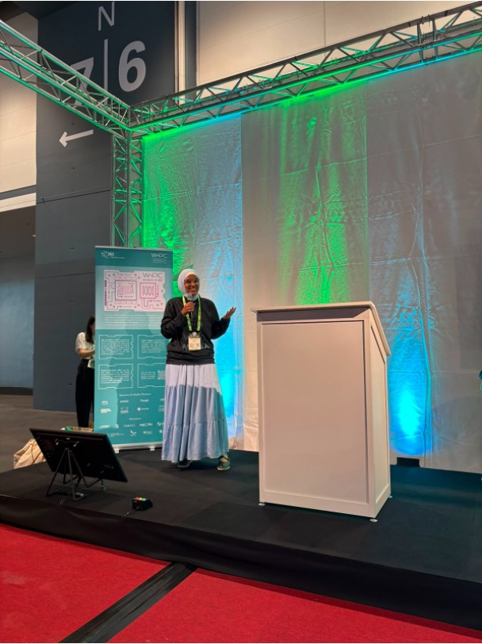
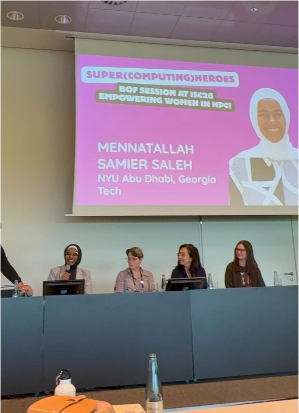

ISC 2026 was a memorable milestone for WHPC MENA. As one of the newest affiliates of the global Women in High Performance Computing (WHPC) network, attending one of the world's leading high-performance computing conferences was an opportunity not only to introduce our community to the international HPC ecosystem, but also to learn, connect and build lasting collaborations.
Throughout the conference, members of our founding committee proudly represented WHPC MENA across several activities, showing that our region has both the talent and the ambition to contribute to the future of high-performance computing.
WHPC MENA took part in these sessions:
- Women in HPC Tech Talks, where Mennatallah Samier Saleh (Menna) presented our initiative and Safae Bourhnane gave a technical, research-oriented talk.
- Women in HPC Community Stage, where Menna connected with other chapter and affiliate leaders to share perspectives and future plans.
- Super(computing)heroes: Empowering Women in HPC, a Women in HPC birds-of-a-feather (BoF) session, where Menna shared life advice and brought the audience closer to her own experience as an HPC practitioner.
In this post we look more closely at our participation in the conference.
Sharing the WHPC MENA story

Our founder, Mennatallah Samier Saleh, represented WHPC MENA in several community-focused sessions at ISC.
She first introduced the affiliate in a Community Stage presentation, sharing the story behind the creation of WHPC MENA, our mission, and our vision for a stronger and more connected HPC community across the Middle East and North Africa. The enthusiastic audience, engaging discussions and conversations with the media reinforced the growing interest in expanding the HPC ecosystem throughout our region.
Menna also presented WHPC MENA at the Women in HPC Tech Talks. The session was another opportunity to introduce attendees to our journey, connect with women from across the MENA region, and welcome new members to our network.
One of the most rewarding parts of ISC was seeing how many researchers and professionals from the MENA region were excited to discover WHPC MENA and wanted to become part of the community.
Menna also spoke to the media about the launch of our affiliate. She told HPCwire that our region needed representation on the global HPC scene in general, and in the Women in HPC community in particular.
Showcasing research
Our presence at ISC also highlighted the technical expertise within our community.

Safae Bourhnane, a member of the founding committee, gave a lightning talk titled “Adaptive Mixed Precision for Energy-Efficient High-Performance Computing.” It explored how adaptive mixed-precision techniques can make HPC applications more energy-efficient while keeping the numerical accuracy that scientific computing requires.
The talk contributed to the technical programme of ISC and showcased research carried out by members of our community. It also opened the door to research collaborations, alongside our work building communities around HPC.
Building connections
Beyond the presentations, ISC 2026 was about people.

The conference was a chance to meet researchers, students, industry professionals and leaders from around the world. Every conversation strengthened our belief that collaboration is essential to growing HPC in the MENA region.
We were especially encouraged by the number of women from the region who came to learn more about WHPC MENA, share their own experiences and ask to join our activities. These conversations remind us that our community is already growing beyond its founding members.
Looking ahead
Our participation in ISC 2026 is only the beginning of WHPC MENA's journey.
Over the coming months, we look forward to organising webinars, technical talks, networking sessions, mentorship opportunities and community events that bring together students, researchers and professionals from across the region.
We believe that greater visibility, collaboration and supportive spaces are essential to strengthening the HPC ecosystem in the Middle East and North Africa.
To everyone who met us at ISC, attended our presentations, shared ideas or simply stopped by to say hello: thank you. We look forward to continuing these conversations and welcoming many more members to the WHPC MENA family.
The journey has just begun. Follow WHPC MENA on LinkedIn and join our mailing list to hear about upcoming events, collaborations and opportunities.